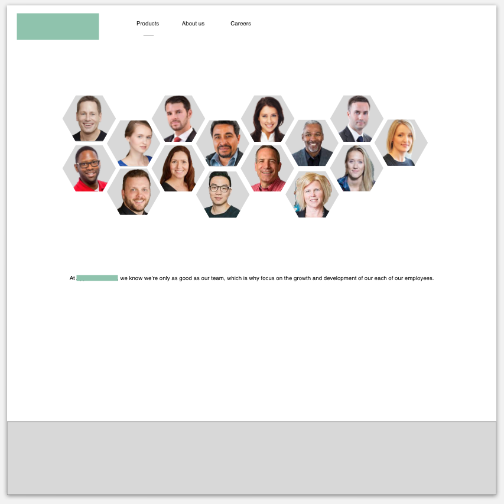
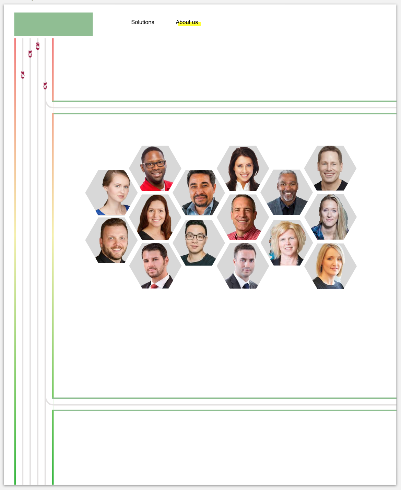
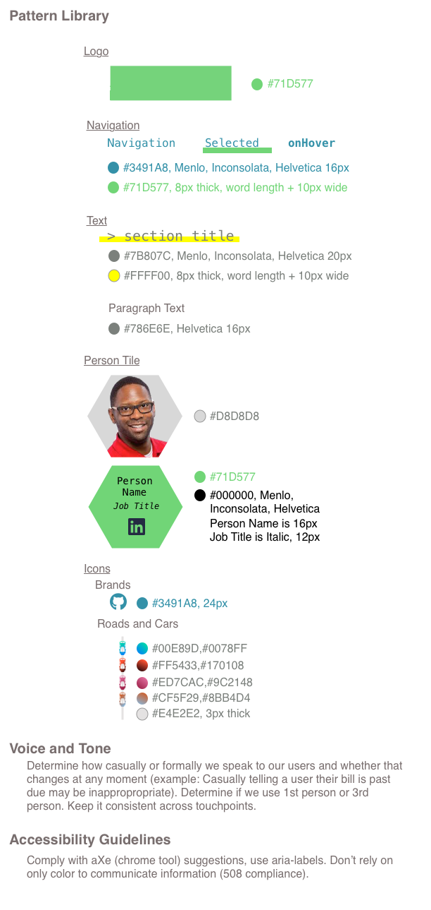
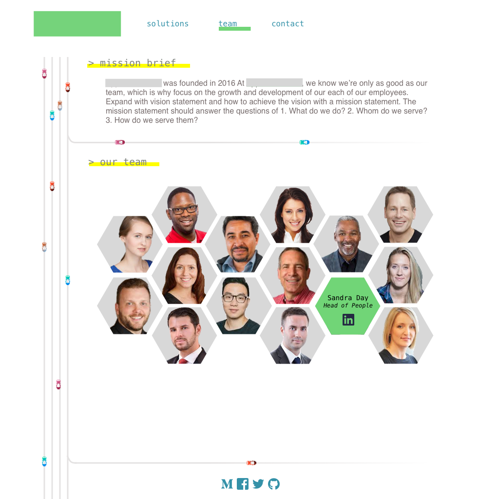
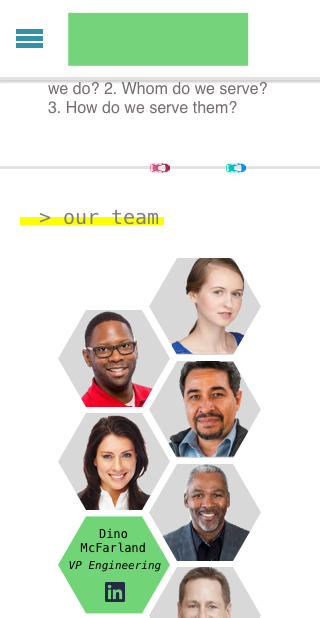

Sophia Goreczky
This is a case study for a company that has been anonymized and exercised visual design skillsets. I spent 1 day on this part of the project.
Using the provided 15 headshots and titles, please construct a team page for the company's public website.
This company works with autonomous vehicle providers so I know I need to look into existing car-related and autonomy-related sites. Looked at car sites (focused on selling cars therefore uninspiring, Toyota Research Institute is closer to what the company is after), and DARPA grand challenge sites (a bit generic and academically focused). I am feeling very inspired by an article I read about the New York City subway system that visualized delays in a memorable and educational way.
One of the first hurdles I identify in this challenge is that the provided headshots are of different sizes, angles, background colors, and zooms. I know that in order to unify the team page, I'm going to remove the backgrounds of all 15 of these pictures. I get through manually removing the background of three pictures before realizing that machine learning has already solved this problem and there's a site that will do it for you. I upload the rest of the images and I'm set to begin.
The second hurdle I identify is that this company does not currently have a public facing site so I need to create a brand identity for them in order to complete this task.
Working in Sketch, I start this challenge with the core problem: unify the team members in a scalable and responsive-friendly way. Team page usually use rectangles or circles for headshots and I wanted to think of something new. I choose hexagons because of their interlocking nature, an analogy I deeply strive for when it comes to teamwork.
I want SVG animated cars on this site. It fits with the brand image for this company and unexpected. Time to add some roadways.
There's a great video by Brad Frost that explains what design systems and atomic design are if you need more background on why they're important. This image isn't a good representation of a design system because it is static but is here to show that I designed this page with a design system thinking in mind.
Building a site in a unified and repeatable (design system driven) way makes for better user experiences, better team alignment, and faster iterations.
I wanted to create something lighter and cheekier than every other car or research site out there because I want the site to be more approachable to a larger set of people. Some people are afraid of autonomy ("they will take my job away" or "this is the beginning of the uprising" are popular phrases floating around). While these people not the direct customer base, starting the site inclusive to a larger population will make complex topics accessible to a larger crowd, jump starting the positive conversations about autonomy (Less traffic, reduced accidents, more time to read on your commute). While this company is not a autonomous vehicle company, it is still lumped into the same space - the more that can be done to make people more comfortable with the future envisioned, the better off the entire industry will be.
 While on the site, these cars, whose colors are based on current autonomous vehicle companies, will animate along their roads. The mobile solution below will reduce down to use the roads as section breaks and have a single lane of traffic.